12 张原片单帧，点击图片查看完整文件。每次选取与镜头相关的单张 JPG 上传，写明附件职责。游戏角色图负责身份，原片帧负责指定视觉元素。保留原图中的字幕与水印，但不将其带入新镜头。
使用说明与附件模板 · 总览图 · 来源与时间点
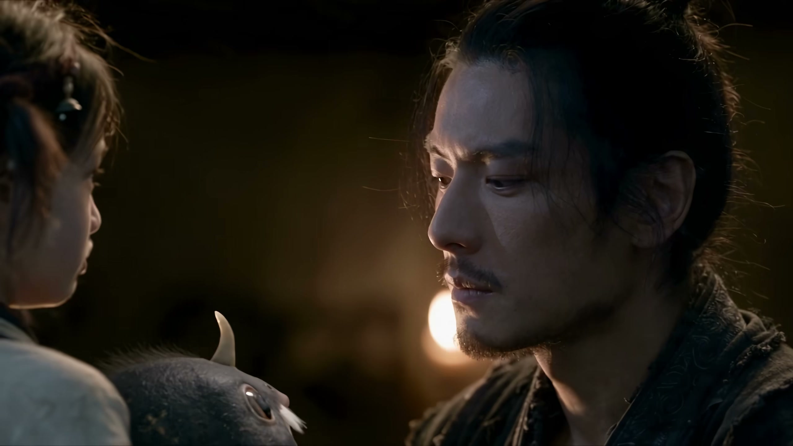
借鉴面部体积、发丝边缘和人物反应的构图；身份由游戏角色图提供。
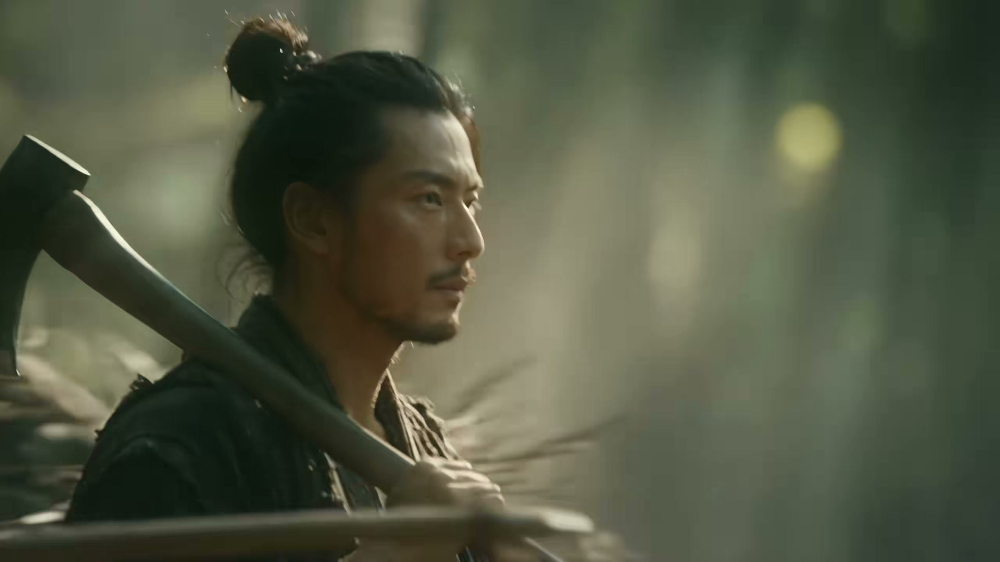
借鉴皮肤、布衣和自然侧逆光的关系；不照搬脸型和服装。
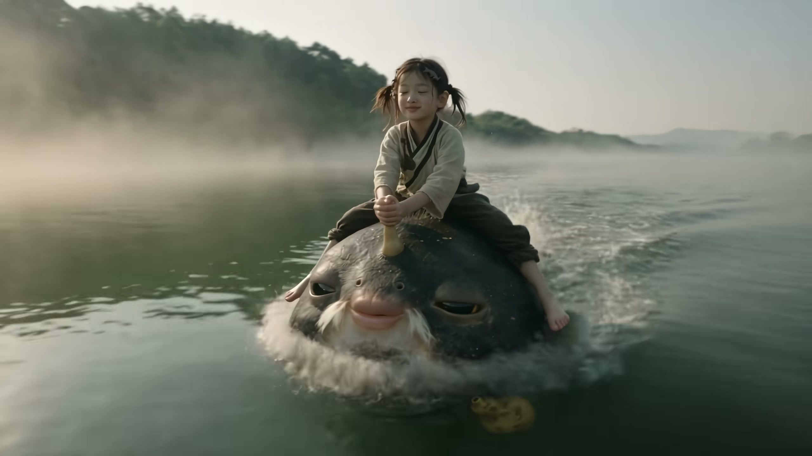
借鉴远近空间、水面和薄雾；生物与剧情不迁移。
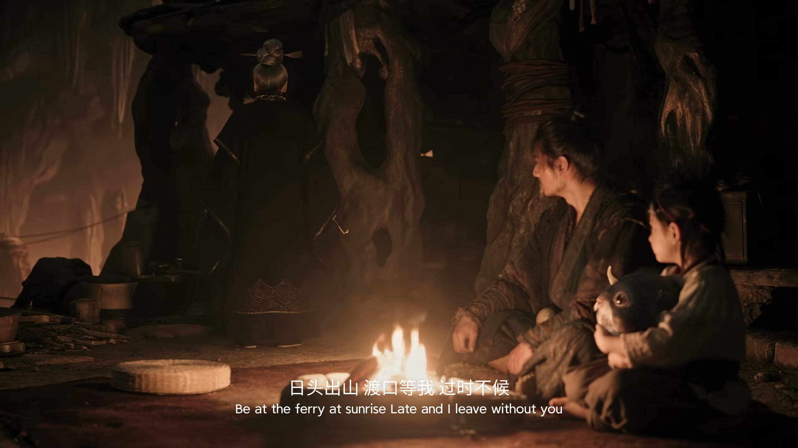
借鉴局部暖光、暗部层次和人物在空间中的位置；洞穴不作为军帐设定。
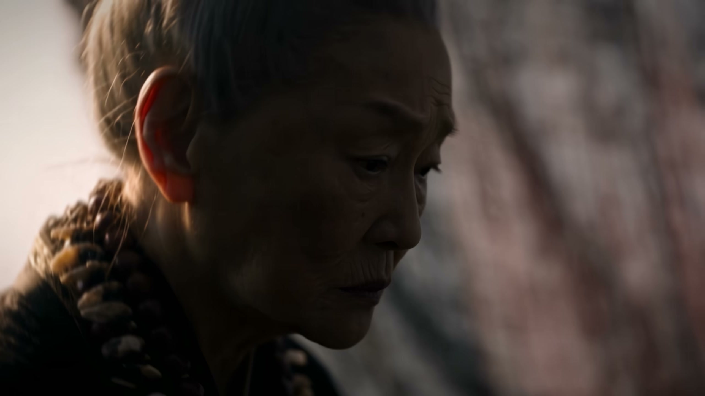
借鉴年龄特征与侧脸明暗；不把参考人物年龄或身份覆盖到游戏角色。
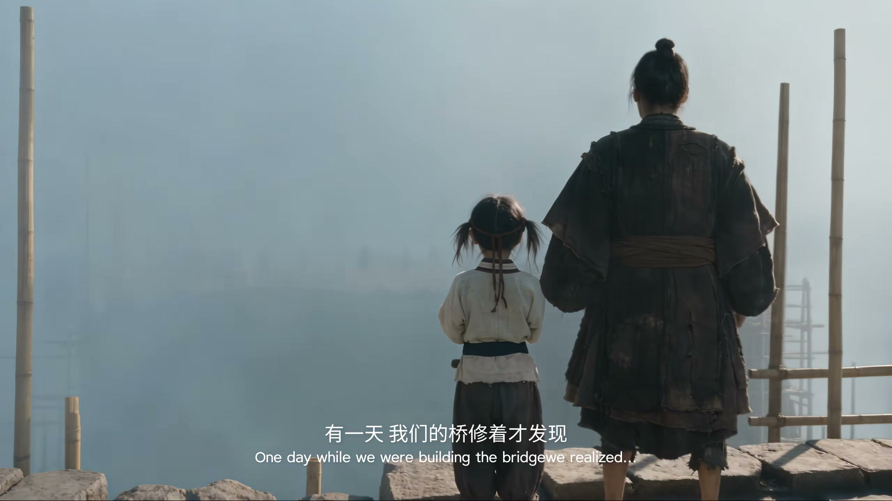
借鉴背影关系与空间留白；不带入原片人物和情节。
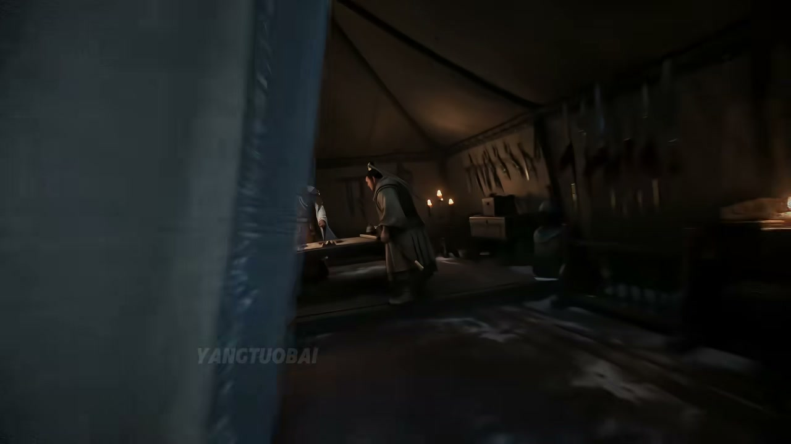
借鉴军帐纵深、桌面关系与烛火光源；替换为游戏确认的三国人物服饰。
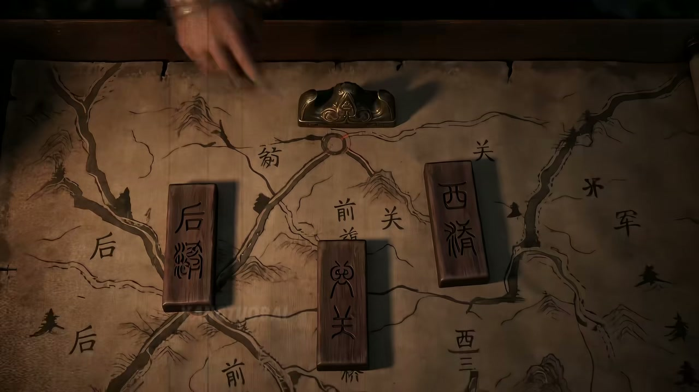
借鉴俯视手部与地图的构图；地图地名、文字和军牌须按游戏设定另制。
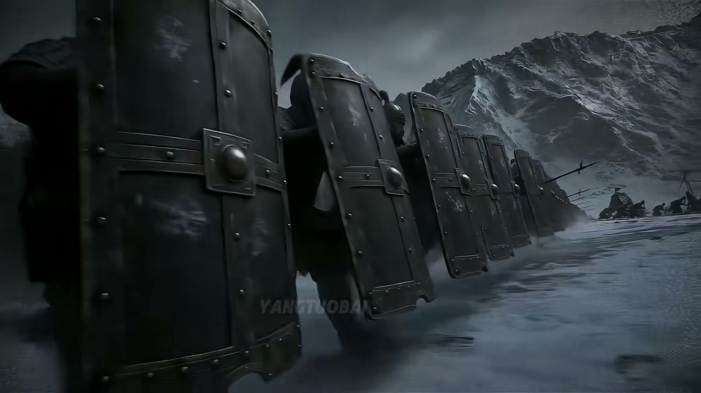
借鉴盾列纵深、低机位和金属重量；不继承雪地与神话装备。
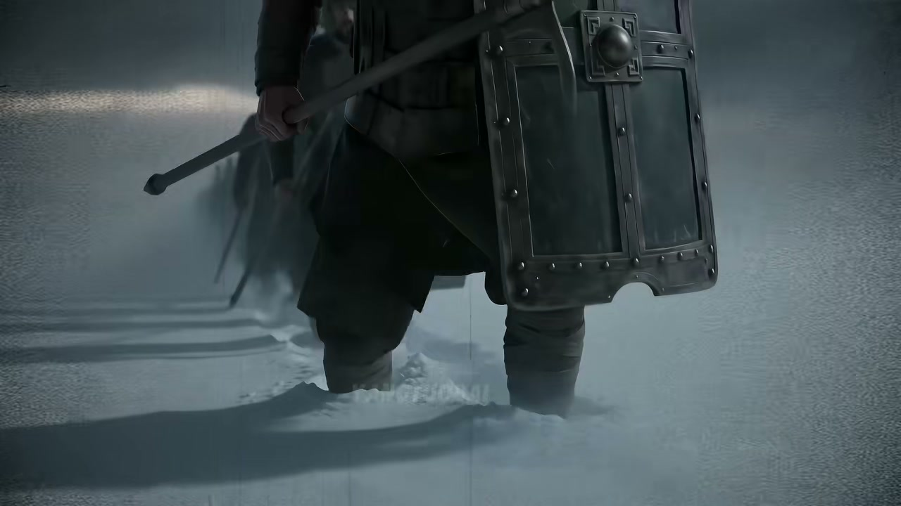
借鉴脚步、负重和地面接触的局部构图；动作节奏需另给视频参考或文字。
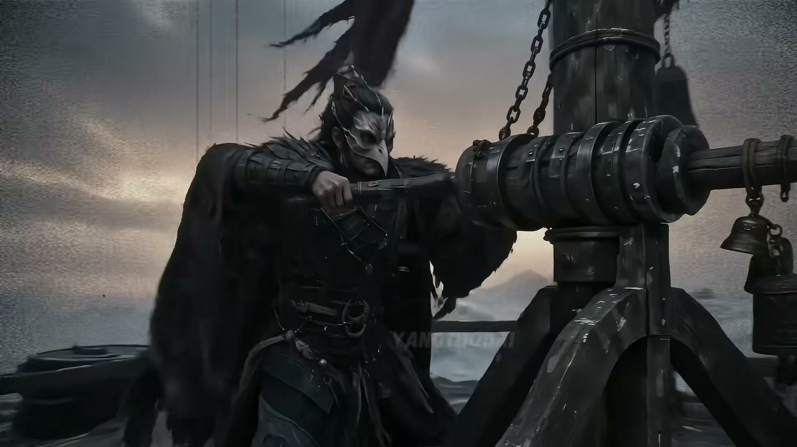
借鉴手部操作、军械结构的体积与磨损质感；不继承神话面具和装备造型。
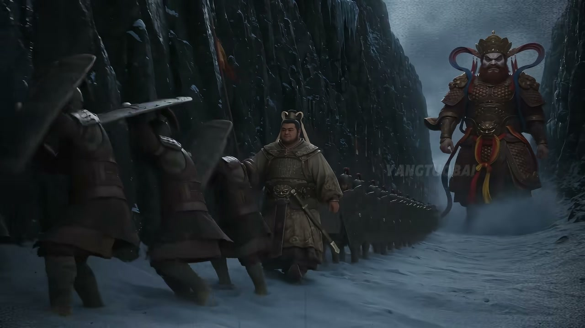
借鉴地形限制、前后站位与队列方向；不继承原片雪山气候和神话造型。